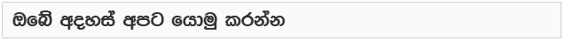

ස්ටෝන්හෙජ් පරයන අබිරහසක්
Published : 10:22 am June 2, 2014 | | No comments so far |
පුරාවිද්යාත්මක වටිනාකමින් යුත් ශ්රේෂ්ඨ නිර්මාණ බි්රතාන්යයේ දකින්න ලැබෙන්නේ නොලැබුණාට පුරාවිද්යාත්මක වටිනාකමකින් යුක්ත අබිරහසක් නම් එංගලන්තයේ තියෙනවා. ඒ ස්ටෝන්හෙන්ජ් (Stonehenge)ගල්කනු. ස්ටොන්හෙන්ජ් කියන්නේ ඉපැරණි පුදබිමක් බවයි බ්රිතාන්ය ඉතිහාසදඥයන් සහ පුරාවිද්යාඥයන් කියන්නේ. මේ ගල් කනු ස්මාරකය මොකක්ද? කවුද හැදුවේ? මොකටද හැදුවේ? කවදාද හැදුවේ? ආදී ප්රශ්නවලට හරිහැටි පිළිතුරු ඉදිරිපත් කරන්න විද්යාවට නොහැකි වීමයි. නමුත් පුරාවිද්යාඥයන් කියන්නේ එය ලොව පැරණිම දින දර්ශනයක් එසේත් නැතිනම් කැලැන්ඩරයක් කියලයි. ඒත් නව ගවේෂණයක ප්රතිපලයක් හැටියට ස්ටෝන්හෙන්ජ්වලටත් වසර 800කටත් වඩා පැරණි ගල්යුගයේ පුදබිමක් බ්රිතාන්යයෙන් හමුවුණා. එහි ගලින් නෙලූ ගොඩනැගිලි 100 කටත් වැඩිය තිබෙන පරිශ්රයක්. එය නව ශිලායුගයේ පැරණිම නිර්මාණයද ? දැන් ස්ටෝන්හෙන්ජ් පරයන අබිරහස වී ඇත්තේ එයයි. එය සම්පූර්ණයෙන් ගවේශණයට කරන්න දසක ගණනක් යාවි කියලයි විද්යාඥයන් කියන්නේ.
පුරාවිද්යාඥයන්ගේ මතයට අනුව ඕක්නිහී පිහිටි මෙම නටබුන් වසර 5000කටත් වඩා පැරණියි. මේ පුරාවිදු බිම හැඳින්වෙන්නේ ඕක්නේ ධරනබැහ කියායි. ‘නෙස් ඔෆ් බ්රෝඞ්ගා’ අසල පිහිටිතැනක්. බීබීසීයේ පුරාවිද්යා විස්තර විචාරක නීල් ඔලිවර් කියන්නේ මෙය, ‘මේ ජීවිත කාලයටම සරිලන ඉතා විශිෂ්ට සොයා ගැනීමක්’ බවයි. ඔහු තවදුරටත් කියන්නේ ‘මේ තරම් විශාල පරිසරයක් පුරා පැතිර ඇති නටබුන් මෙතෙක් සොයා ගෙන නැහැ. ඒ නිසා ලෝකය හා විශ්වය පිළිබඳ නව ශිලා යුගයේ විසූ මිනිසා තුළ පැවති විශ්වාසයන් හා ආගමික භාවිතයන් පිළිබඳ අබිරහස් හෙළි කර ගැනීමට ඉතා හොඳ කවුළුවක් මෙම ස්ථානයෙන් විවරව ඇතැ’යි කියායි.
දැනට මෙහි ගල් යුගයේ ගොඩනැගිලිවල නටබුන් 14ක් සොයා ගෙන තියෙනවා. එහෙත් තාපභූභෞතික තාක්ෂණයට (තාපය යොදා ගෙන පොළොව යට ඇති සොයා ගැනීමේ තාක්ෂණය) අනුව තවත් නටබුන් ස්ථාන 100කට වැඩි ප්රමාණයක් ඇතැයි හඳුනාගෙන තියෙනවා. මේ නිසා මෙහි ඇත්තේ ඉතා පැරණි ආරාමයක නටබුන් විය හැකියැයි යන්න පුරාවිද්යාඥයන් අනුමාන කරනවා. මෙම ස්ථානයෙහි තවමත් ගවේශනය කර ඇත්තේ සියයට දහයකටත් අඩු ප්රමාණයක් විතරයි. මෙහි රහස් හෙළිදරවු කර ගැනීමට විද්යාඥයන්ට දසක කීපයක් යාවි.
මෑතක් වනතුරු ස්ටෝන්හෙන්ජ් කේන්ද්ර කරගෙන නව ශිලා යුගය ගැන කතා කළ ද අනාගතයේ දී මෙහි ඇති අබිරහස් ගැන වඩාත් අවධානය යොමු වෙනවා ඇති. දැනට සොයා ගෙන ඇති පරිදි බි්රතාන්යයේ පැරණිතම බිතුසිතුවම් හමු වී ඇත්තේ ද මෙම ස්ථානයෙනි. මෙහි ඇතුළත බිත්ති යැයි අනුමාන කළ හැකි නටබුන් අතර දැකිය හැකි රතු පැහැති අක්වක් රේඛා නවශිලා යුගයේ මිනිසාගේ ඉපැරණි බිතුසිතුවම්වලට අයත් ඒවා විය හැකිය යනු පුරාවිද්යා මතයයි. මේ ස්ථානය පිහිටා ඇත්තේ විල්ට්ෂයර්වලින් දකුණු දිගින් සැතැපුම් 500ක් තරම් දුරිනි. මෙම නටබුන් මතුකර ගෙන ඇත්තේ දැනටමත් මතු කර ගෙන ඇති ‘නෙස් ඔෆ් බ්රෝඞ්ගා’ ගල් කුලුනු වළල්ල අසළයි.
ඬේලිමේල් ඇසුරිනි
ස්ටෝන්හෙන්ජ් අබිරහස
ශතවර්ෂ ගණනාවක් තිස්සේ ස්ටෝන්හෙන්ජ් ගැන නොයෙක් විධියේ පැහැදිලි කිරීම් ඉදිරිපත් වෙලා තියෙනවා. ඒ අතුරින් ස්ටෝන්හෙන්ජ් ඉදිකළ කාලය ගැන තොරතුරු සොයා ගැනීමට හැකිවුනත් ස්ටෝන්හෙන්ජ් හරියටම කුමක් දැයි කියන්න පැහැදිලි කළ හැකි වී නැහැ. සමහර බි්රතාන්ය ජාතිකයන් විශ්වාස කළේ එය පැරණි රජවරුන්ගේ සොහොන් බිමක් ලෙසයි. සමහරුන් කීවේ පේගන් දෙවියන්ට පුද පූජා පැවැත්වූ දෙවොලක් කියායි. තවත් අය කීවේ සුප්රකට ආතර් රජුගේ මායාකරු මර්ලින් විසින් නිර්මාණය කරන ලද්දක් කියායි.
කවුරු කොහොම කීවත් ඒත් මෑත කාලයේදී නම් තවත් අපූරු තර්කයක් ඉදිරිපත් වුණා. ඒ ස්ටෝන්හෙන්ජ් උසස් තාක්ෂණික දියුණුවක් ඇති පිටසක්වල ජීවී කොට්ඨාශයකගේ අපූරු නිර්මාණයක් ලෙසයි. වර්තමාන විද්යාඥයන්ගේ මතය ස්ටොන්හෙන්ජ් පුරාණ තාරකා විද්යාඥයන් විසින් භාවිතා කළ ඉතාමත් සංකීර්ණ දිනදර්ශනයක් යන්නයි.
වැරදි වැටහීම්
16 වැනි සියවසේ විසූ බි්රතාන්ය පුරාවස්තු රැුස්කරන්නන් කීවේ ස්ටෝන්හෙන්ජ් ගල්කනු යනු ඩෲයිඞ් පූජකයන් වැඳුම් පිදුම් කළ පූජනීය දේවාලයක් කියලයි. ඩෲයිඞ් කියලා කියන්නේ කෙල්ටික් පූජකයන් පිරිසකි. කෙල්ටික් සංස්කෘතිය බටහිර යුරෝපයේ මුල් බැසගෙන තිබුණේ රෝම අධිරාජ්ය සමයේදීයි. මේ ඩෲයිඞ් පූජකයෝ ඇදහූයේ පේගන් ආගමයි. ඔවුන්ගේ දෙවිවරුන් වුණේ සොබාදහමයි. ගස්වැල්, ගංගා ඇළදොළ, අහස පොළොව ආදිය. ඔවුන් දක්ෂ මායාකරුවන් බවට ප්රචලිතයි. ඒ නිසා ස්ටෝන්හෙන්ජ් ඩෲයිඞ් උරුමයක් කියලා විශ්වාස කරලා ආදරේ කරන්න බ්රිතාන්ය වැසියෝ බොහොමයක් පෙලඹුණා. කවියන් ස්ටෝන්හෙන්ජ් ගැන කවි ලීවා. 1960 දශකයේදී ඩෲයිඞ් පූජකයන්ට ඇලුම් කළ පිරිස් ඔවුන් වගේ දිගු ලෝගුවලින් සැරසිලා සෑම වසරකම ග්රීස්ම සෘතුවේ ස්ටෝන්හෙන්ජ් වටා එක්රොක් වී පැරැන්නෝ කළාක් මෙන් යාගහෝම උත්සව පවත්වන්න වුණා. පාෂාණධාතු විද්යාඥයන්ගේ මතයේ හැටියට ස්ටෝන්හෙන්ජ් හුඟක් පැරණියි. අවස්ථා තුනකදී කොටස් තුනකින් ඉදි වී ඇති එහි මුල් කොටස ක්රිස්තු පූර්ව 3100ට අයත්. ඩෲයිඞ්වරුන් පහළ වෙන්නට බොහොම ඉස්සරින්. එංගලන්තයේ සැලිස්බරිහී සිට කි.මී. 15ක් පමණ දුරින් පිහිටා ඇති මේ ස්ටෝන්හෙන්ජ්හී ප්රධාන ලක්ෂණය වන්නේ දැවැන්ත ගල් කුලූනු පෙළක් කවාකාරව තැන්පත් කර තිබීමයි. මේවා නව ශිලායුගයට (ක්රිස්තු පූර්ව 4500ත් 1500ත් අතර කාලයට) අයත් ඒවා ලෙසයි සැලකෙන්නේ.
ඕබ්රි සිදුරු
පැරණි කොටසේ තියෙනවා වටකුරුව තැනූ ඉවුරක් හා විශාල ප්රදේශයක් පුරා පැතිරුණු වළක්. එහි විශ්කම්භය මීටර් 10ක් පමණ වෙනවා. ඒ වටා තියෙනවා, වළල්ලක් ආකාරයට විහිදුණු, සෙ.මී 130ක් පළල කුඩා සිදුරු පෙළක්. ඒවා 1666 දී ජෝන් ඕබ්රි විසින් මුලින්ම සොයා ගත් නිසා ‘ ඕබ්රි සිදුරු’ කියා හැඳින්වෙනවා. දෙවන අදියරට අයත් මේ සිදුරුවලින් හෙළිවන්නේ මෙහි දැවවලින් කළ දැවැන්ත ඉදිකිරීමක් පැවති බවයි.
තුන්වන අදියර
අද දක්නට ලැබෙන්නේ මේ ස්ටෝන්හෙන්ජ් තුන්වන අදියරයි. එහි දැවැන්ත ගල් කුලූනු 30ක් කවාකාරව තැන්පත් කර තියෙනවා. ඒ කාලයේ රෝදය ගැන දැනීමක් මේවා ඉදි කළ අයට නොතිබුණු නිසා මේවා මෙහි ගෙන ඒමත් විස්මයක්. මේ එකක් මීටර් 4ක් උසයි. මේ තරම් විශාල ගල් කුලුනු මෙහි ගෙන එන්නට ඇතැයි සැලකෙන්නේ මෙහි සිට කි.මී. 40ක් පමණ එපිට ගල්වළකින්. ප්රධාන කවය ඇතුළේ ඇති අශ්ව ලාඩමක හැඩයට තබා ඇති නිල් පැහැ ගල් විශේෂය මෙහි ගෙනැවිත් ඇත්තේ වේල්සයෙන්. එය කි.මී. 248ක් දුරින් පිහිටි තැනක්. 1963 දී ජෙරල්ඞ් හෝකින්ස් කියන තාරකා විද්යාඥයා විසින් පළ කරන ලද ‘ස්ටෝන්හෙන්ජ් ඩිකෝඩඞ්’ නම් පොතෙන් එයා කරුණු දක්වා තියෙනවා, පැරැන්නන් මේ ස්ටෝන්හෙන්ජ් ඉදි කර ඇත්තේ අහස නිරීක්ෂණය කිරීමට කියා. සූර්යයා කේන්ද්ර කර ගෙන ඉදි කර ඇති මෙහි එක් ගල් කුළකින් සූර්යයා සමකයෙන් ඈත්වන අවස්ථා හඳුනා ගත හැකියි. ඔහු දක්වන ආකාරයට මෙය ගල්යුගයේ පැවති සූර්ය කැලැන්ඩරයක්. මේ මගින් පැරණි මිනිසුන් සූර්ය ග්රහණ සිදුවීම පිළිබඳ අනාවැකි පවා කියන්නට ඇතැයි හෝකින්ස් ඔහුගේ පොතෙන් හෙළිදරවු කර තියෙනවා
ලුසිත ජයමාන්න
ටයිම් සඟරාව මගින් ප්රකාශයට පත් කළ
එක්ස්ප්ලෝරිංග් ද අන්එක්ස්ප්ලේඞ් -
ද වර්ල්ඞ්ස් ගේ්රටස්ට් මාවල්ස්, මිස්ටරීස් ඇන්ඞ් මිත්ස්
යන ග්රන්ථය හා අන්තර්ජාල තොරතුරු ඇසුරින්


